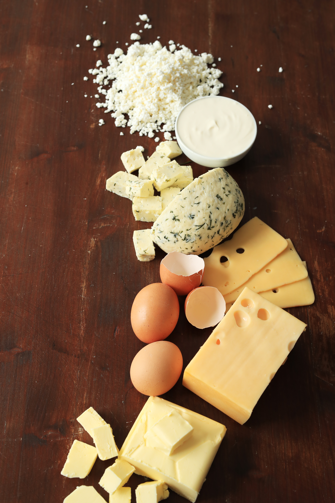

Real Food, Grown the Right Way
From the heart of Meyerton to your kombuis—100% organic and purely lekker.

Welcome to Lekker Organic Farm
At Lekker Organic Farm, we believe in the power of the umhlaba. Since 2012, we've been farming sustainably to bring you produce that isn't just healthy—it's kwaai.
Our Featured Produce

Fresh Dairy
Pure milk and handmade butter, produced daily with no synthetic hormones.

Seasonal Plants
Crisp, organic vegetables harvested at the peak of freshness.
Frequently Asked Questions
We follow strict organic farming protocols approved by international certification bodies. Our practices include crop rotation, natural pest control, and zero synthetic inputs. All our products are regularly tested for residues.
We offer local delivery within a 50km radius of Meyerton, weekly box subscriptions, and direct pickup from our farm. For larger orders, we can arrange special delivery schedules.
Yes, we celebrate the seasons! Our produce varies throughout the year based on what nature provides. This ensures peak freshness and flavor. Check our enquiry form for current availability.
Absolutely! We welcome farm visits by appointment. You can see our sustainable practices firsthand and meet the team. Contact us to schedule your visit.
Our Product Categories
Leafy Greens
Fresh spinach, kale, and lettuce grown with organic methods.
Root Vegetables
Carrots, beets, and potatoes harvested at peak nutrition.
Seasonal Specials
Tomatoes, cucumbers, and peppers in season.
Fresh Milk
Raw and pasteurized milk from grass-fed cows. Available weekly.
Hand-Churned Butter
Rich, creamy butter with natural flavor. Perfect for cooking and baking.
Specialty Dairy
Seasonal yogurt and cheese products available on request.
Weekly Veggie Box
5kg of seasonal vegetables delivered every week.
Dairy & Produce Bundle
Vegetables plus fresh milk and butter monthly package.
Premium Combo
Our best-selling mix of seasonal produce and dairy items.
Ready to eat healthy?
Check out our full range of products or get in touch with us today!
View Products Contact UsFarm Gallery
Experience the beauty of organic farming at Lekker Farm